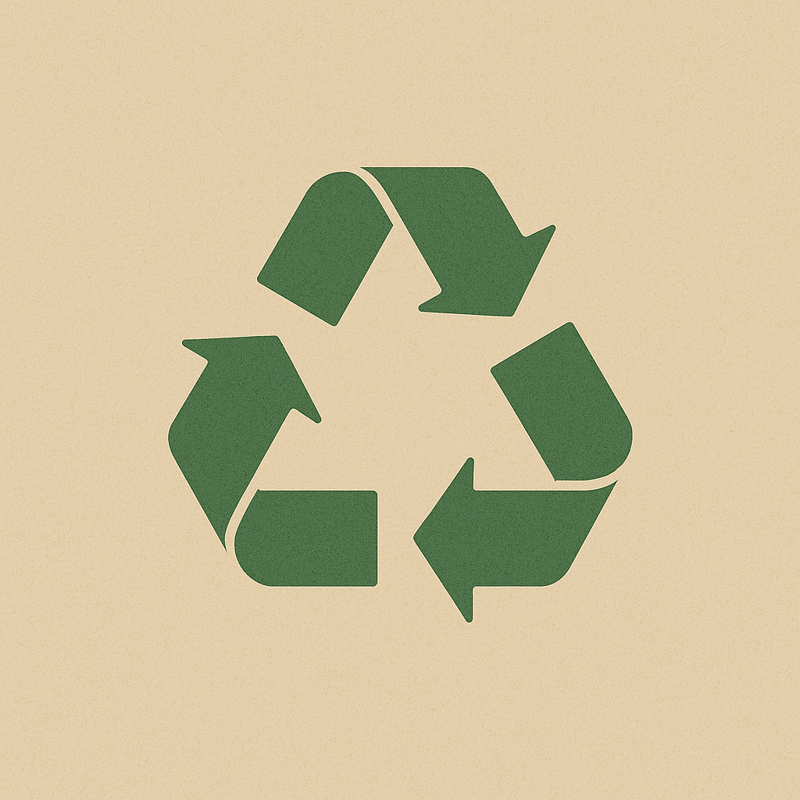
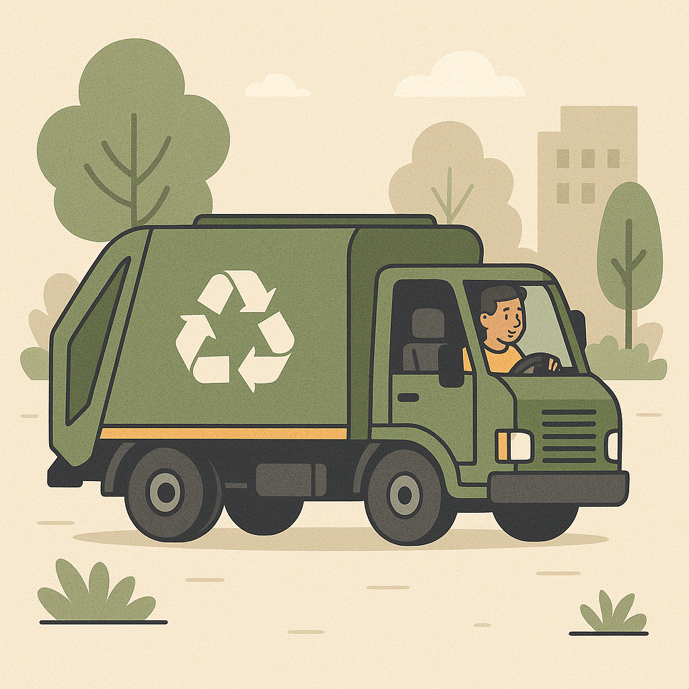
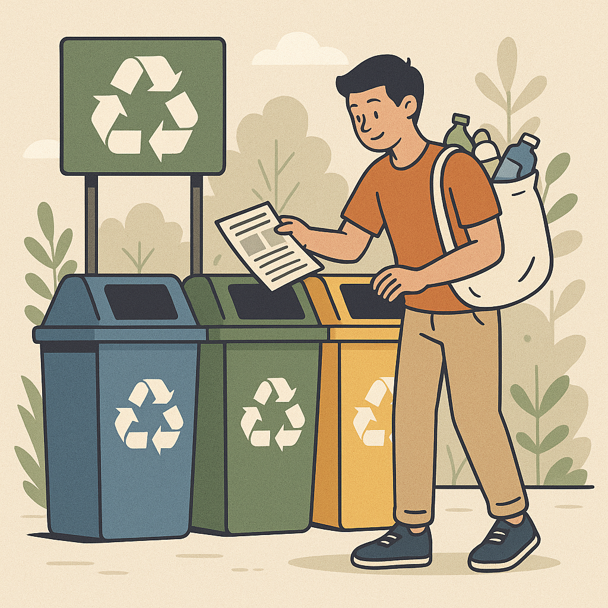

Objetivo é facilitar a coleta seletiva em Ibitinga, ajudando moradores e empresas a encontrarem pontos de reciclagem de forma rápida e prática.
Cadastre novos pontos e contribua para uma cidade mais limpa, sustentável e consciente.
O descarte incorreto de resíduos ainda é um grande desafio para muitas cidades.
Falta de informação e dificuldade para localizar pontos de coleta acabam prejudicando o meio ambiente e a qualidade de vida da população.


Este projeto foi desenvolvido como parte de uma atividade extensionista do curso de Análise e Desenvolvimento de Sistemas, alinhado aos ODS 11 e 12.
Nosso objetivo é criar uma ferramenta acessível que conecte cidadãos e pontos de coleta, incentivando práticas sustentáveis e fortalecendo a responsabilidade coletiva pelo futuro do planeta.
| Nome | Endereço | Materiais | Ações |
|---|